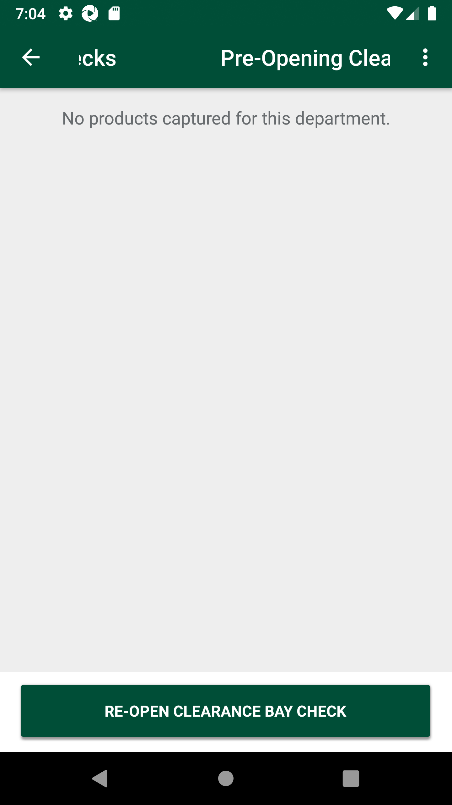
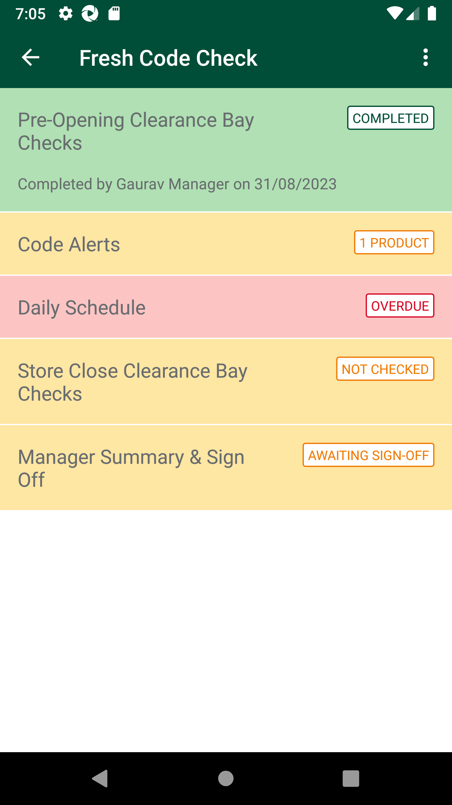
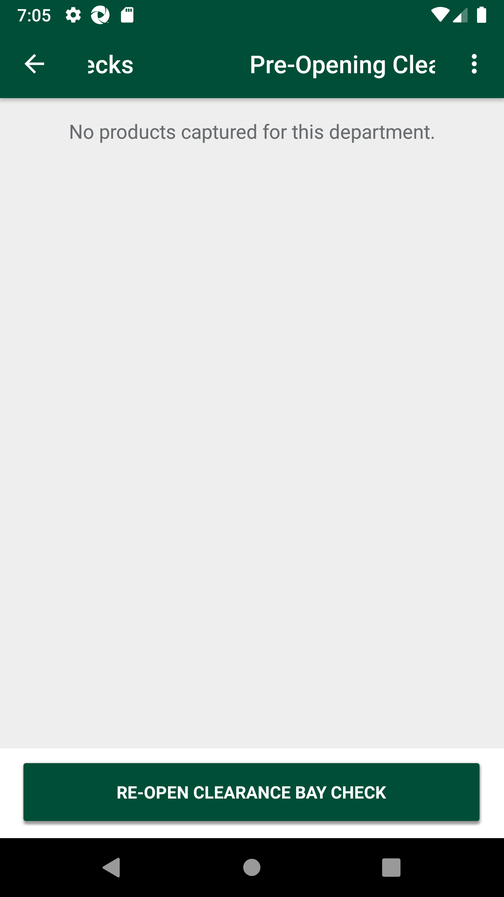
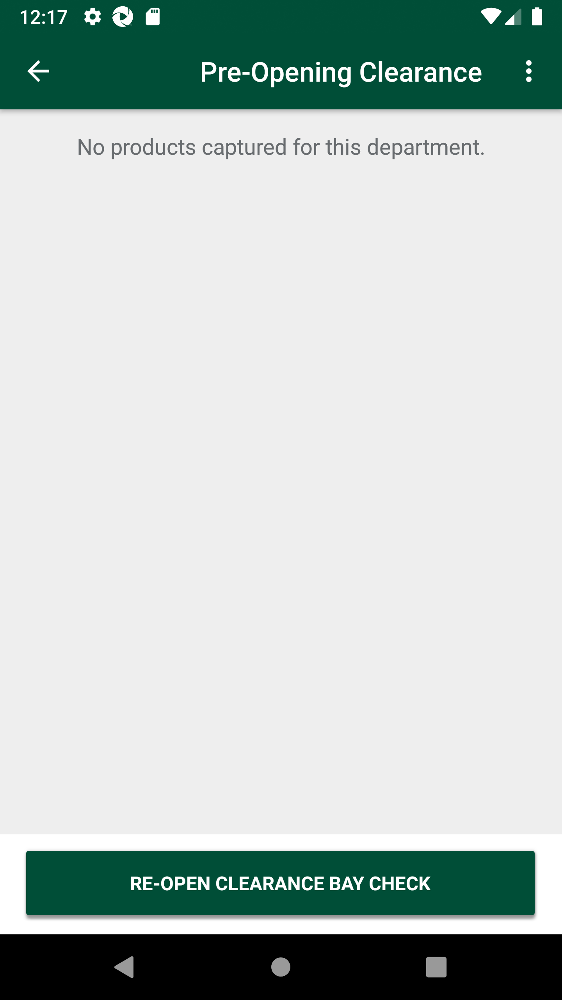
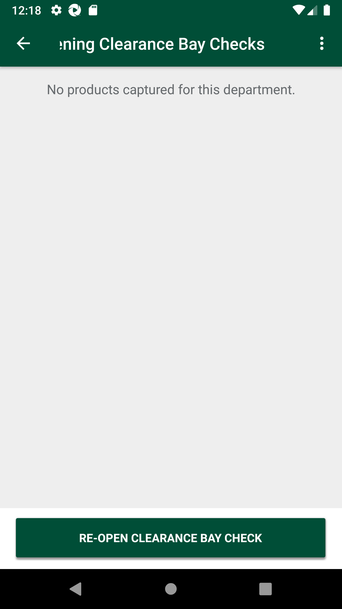

-
Verify Pre-Opening Clearance Bay Checks and Store Close Clearance Bay Checks in Fresh Code Check
18:47:51 PM / 43:14:475 Fail
Verify Pre-Opening Clearance Bay Checks and Store Close Clearance Bay Checks in Fresh Code Check
08.31.2023 18:47:51 08.31.2023 19:01:06 43:14:475 · #test-id=1@NewfccReductionBayAmPm @regressionPassTO CHANGE THE DEVICE TIMINGS AS REQUIREDPassTO CHANGE THE DEVICE TIMINGS AS REQUIREDGiven I send the time "07" and mins "00" and meridiem "am" and current date in listThen I Change timeThen I Change datePassTO CHANGE THE DEVICE TIMINGS AS REQUIREDGiven I send the time "12" and mins "15" and meridiem "pm" and current date in listThen I Change timeThen I Change datePassUAT_01Verify new menu is added in list 'Fresh Code Check'PassUAT_01Verify new menu is added in list 'Fresh Code Check'When I enter Username and Password for SMA Collegue userAnd I click on login button for SMAThen I click on the main menu "Code Checking"And I verify "Fresh Code Check" pagePassUAT_02Verify Submenu list and status in 'Fresh Code Check'PassUAT_02Verify Submenu list and status in 'Fresh Code Check'When I enter Username and Password for SMA Collegue userAnd I click on login button for SMAThen I click on the main menu "Code Checking"And I verify "Fresh Code Check" pageThen I click on "Fresh Code Check"And I verify "Code Alerts" is displayedAnd I verify "Pre-Opening Clearance Bay Checks" is displayedAnd I verify "Daily Schedule" is displayedAnd I verify "Store Close Clearance Bay Checks" is displayedAnd I verify "Manager Summary & Sign Off" is displayedAnd I verify "Code Alerts" statusAnd I verify "Pre-Opening Clearance Bay Checks" statusAnd I verify "Daily Schedule" statusAnd I verify "Store Close Clearance Bay Checks" statusFailUAT_03Verify Pre-Opening Clearance Bay Checks header,label and Scren message textFailUAT_03Verify Pre-Opening Clearance Bay Checks header,label and Scren message textWhen I enter Username and Password for SMA Collegue userAnd I click on login button for SMAThen I click on the main menu "Code Checking"Then I click on "Fresh Code Check"Then I click on "Pre-Opening Clearance Bay Checks"And I verify Popup message displayedcom.morrisons.common.action.Hook.afterScenario(io.cucumber.java.Scenario)And I click ContinueStep skippedAnd I verify Screen message displayedStep skippedFailUAT_04Verify Pre-Opening Clearance Bay Checks status will get updated to 'Completed' when 'Confirm Reduction Bay Check' button clickedFailUAT_04Verify Pre-Opening Clearance Bay Checks status will get updated to 'Completed' when 'Confirm Reduction Bay Check' button clickedWhen I enter Username and Password for SMA Collegue userAnd I click on login button for SMAThen I click on the main menu "Code Checking"Then I click on "Fresh Code Check"Then I click on "Pre-Opening Clearance Bay Checks"And I verify Popup message displayedcom.morrisons.common.action.Hook.afterScenario(io.cucumber.java.Scenario)And I click ContinueStep skippedAnd I click on Button "CONFIRM CLEARANCE BAY CHECK"Step skippedAnd I click ContinueStep skippedAnd I verify Reduction Bay AM status as "COMPLETED"Step skippedThen I click on "Pre-Opening Clearance Bay Checks"Step skippedAnd I verify Popup message displayedStep skippedAnd I click ContinueStep skippedAnd I click on Button "RE-OPEN CLEARANCE BAY CHECK"Step skippedAnd I click ContinueStep skippedFailUAT_05 Verify Pre-Opening Clearance Bay Checks screen when user perform 'Wastage' action and select expiry date as past date.FailUAT_05 Verify Pre-Opening Clearance Bay Checks screen when user perform 'Wastage' action and select expiry date as past date.When I enter Username and Password for SMA Collegue userAnd I click on login button for SMAThen I click on the main menu "Code Checking"Then I click on "Fresh Code Check"Then I click on "Pre-Opening Clearance Bay Checks"And I verify Popup message displayedcom.morrisons.common.action.Hook.afterScenario(io.cucumber.java.Scenario)
And I click ContinueStep skippedAnd I click on barcode entry ButtonStep skippedThen Enter "105236511" numberStep skippedAnd I click on spinner to select one of the action "Wastage"Step skippedAnd I enter markdown "1" for the productStep skippedAnd I click on CalendarStep skippedThen I select next -2 th dateStep skippedThen I click on Done ButtonStep skippedAnd I capture product detailsStep skippedAnd I click Log ProductStep skippedThen Verify Select Reason Code templateStep skippedAnd I select "Waste - Out of Date" and ConfirmStep skippedAnd I verify my product displayed in view listStep skippedFailUAT_06Verify Pre-Opening Clearance Bay Checks across FCC landing page status 'In Progress' after adding one productFailUAT_06Verify Pre-Opening Clearance Bay Checks across FCC landing page status 'In Progress' after adding one productWhen I enter Username and Password for SMA Collegue userAnd I click on login button for SMAThen I click on the main menu "Code Checking"Then I click on "Fresh Code Check"And I verify Reduction Bay AM status as "IN PROGRESS"com.morrisons.common.action.Hook.afterScenario(io.cucumber.java.Scenario)
FailUAT_07 Verify Pre-Opening Clearance Bay Checks screen when user perform 'Wastage' action and select expiry date as future date.FailUAT_07 Verify Pre-Opening Clearance Bay Checks screen when user perform 'Wastage' action and select expiry date as future date.When I enter Username and Password for SMA Collegue userAnd I click on login button for SMAThen I click on the main menu "Code Checking"Then I click on "Fresh Code Check"Then I click on "Pre-Opening Clearance Bay Checks"And I verify Popup message displayedcom.morrisons.common.action.Hook.afterScenario(io.cucumber.java.Scenario)
And I click ContinueStep skippedAnd I click on barcode entry ButtonStep skippedThen Enter "105236511" numberStep skippedAnd I click on spinner to select one of the action "Wastage"Step skippedAnd I enter markdown "1" for the productStep skippedAnd I click on CalendarStep skippedThen I select next 1 th dateStep skippedThen I click on Done ButtonStep skippedAnd I capture product detailsStep skippedAnd I click Log ProductStep skippedThen Verify Select Reason Code templateStep skippedAnd I select "Waste - Out of Date" and ConfirmStep skippedAnd I verify my product displayed in view listStep skippedPassUAT_09 Verify when a user clicks on Pre-Opening Clearance Bay Checks after defined time window, then below 'prompt' will appear and click 'Cancel'PassUAT_09 Verify when a user clicks on Pre-Opening Clearance Bay Checks after defined time window, then below 'prompt' will appear and click 'Cancel'When I enter Username and Password for SMA Collegue userAnd I click on login button for SMAThen I click on the main menu "Code Checking"Then I click on "Fresh Code Check"Then I click on "Pre-Opening Clearance Bay Checks"And I verify Popup message displayedAnd I click CancelFailUAT_10 Verify whether status is displayed as 'Completed' on Fresh Code check submenu screen for Pre-Opening Clearance Bay Checks after click on Confirm Reduction bay Check ButtonFailUAT_10 Verify whether status is displayed as 'Completed' on Fresh Code check submenu screen for Pre-Opening Clearance Bay Checks after click on Confirm Reduction bay Check ButtonWhen I enter Username and Password for SMA Collegue userAnd I click on login button for SMAThen I click on the main menu "Code Checking"Then I click on "Fresh Code Check"Then I click on "Pre-Opening Clearance Bay Checks"And I verify Popup message displayedAnd I click ContinueAnd I verify my product displayed in view listcom.morrisons.common.action.Hook.afterScenario(io.cucumber.java.Scenario)
And I click on Button "CONFIRM CLEARANCE BAY CHECK"Step skippedAnd I click ContinueStep skippedAnd I verify Reduction Bay AM status as "COMPLETED"Step skippedFailUAT_11 Verify when status is 'Completed', user is not allowed to scan and user to only View the submitted list and all the fields should be non editableFailUAT_11 Verify when status is 'Completed', user is not allowed to scan and user to only View the submitted list and all the fields should be non editableWhen I enter Username and Password for SMA Collegue userAnd I click on login button for SMAThen I click on the main menu "Code Checking"Then I click on "Fresh Code Check"And I verify Reduction Bay AM status as "COMPLETED"Then I click on "Pre-Opening Clearance Bay Checks"And I verify Popup message displayedAnd I click ContinueAnd I verify Scanning not allowedAnd I verify fields are not editablecom.morrisons.common.action.Hook.afterScenario(io.cucumber.java.Scenario)
PassUAT_12 Verify when status is completed, User able to 'Reopen Reduction Bay Check'PassUAT_12 Verify when status is completed, User able to 'Reopen Reduction Bay Check'When I enter Username and Password for SMA Collegue userAnd I click on login button for SMAThen I click on the main menu "Code Checking"Then I click on "Fresh Code Check"Then I click on "Pre-Opening Clearance Bay Checks"And I verify Popup message displayedAnd I click ContinueThen I reopen Reduction Bay CheckAnd I verify Reduction Bay AM status as "IN PROGRESS"
-
org.openqa.selenium.NoSuchElementException
1 tests
org.openqa.selenium.NoSuchElementException
1 failedStatus Timestamp TestName Fail 18:51:30 PM And I verify Popup message displayed Verify Pre-Opening Clearance Bay Checks and Store Close Clearance Bay Checks in Fresh Code Check.UAT_03Verify Pre-Opening Clearance Bay Checks header,label and Scren message text.And I verify Popup message displayedFail 18:52:23 PM And I verify Popup message displayed Verify Pre-Opening Clearance Bay Checks and Store Close Clearance Bay Checks in Fresh Code Check.UAT_04Verify Pre-Opening Clearance Bay Checks status will get updated to 'Completed' when 'Confirm Reduction Bay Check' button clicked.And I verify Popup message displayedFail 18:53:16 PM And I verify Popup message displayed Verify Pre-Opening Clearance Bay Checks and Store Close Clearance Bay Checks in Fresh Code Check.UAT_05 Verify Pre-Opening Clearance Bay Checks screen when user perform 'Wastage' action and select expiry date as past date..And I verify Popup message displayedFail 18:54:07 PM And I verify Reduction Bay AM status as "IN PROGRESS" Verify Pre-Opening Clearance Bay Checks and Store Close Clearance Bay Checks in Fresh Code Check.UAT_06Verify Pre-Opening Clearance Bay Checks across FCC landing page status 'In Progress' after adding one product.And I verify Reduction Bay AM status as "IN PROGRESS"Fail 18:54:58 PM And I verify Popup message displayed Verify Pre-Opening Clearance Bay Checks and Store Close Clearance Bay Checks in Fresh Code Check.UAT_07 Verify Pre-Opening Clearance Bay Checks screen when user perform 'Wastage' action and select expiry date as future date..And I verify Popup message displayedFail 18:58:33 PM And I verify my product displayed in view list Verify Pre-Opening Clearance Bay Checks and Store Close Clearance Bay Checks in Fresh Code Check.UAT_10 Verify whether status is displayed as 'Completed' on Fresh Code check submenu screen for Pre-Opening Clearance Bay Checks after click on Confirm Reduction bay Check Button.And I verify my product displayed in view listFail 18:59:57 PM And I verify fields are not editable Verify Pre-Opening Clearance Bay Checks and Store Close Clearance Bay Checks in Fresh Code Check.UAT_11 Verify when status is 'Completed', user is not allowed to scan and user to only View the submitted list and all the fields should be non editable.And I verify fields are not editable
-
@regression
14 tests
@regression
6 passed 8 failedStatus Timestamp TestName Fail 18:47:51 PM Verify Pre-Opening Clearance Bay Checks and Store Close Clearance Bay Checks in Fresh Code Check Pass 18:47:51 PM TO CHANGE THE DEVICE TIMINGS AS REQUIRED Verify Pre-Opening Clearance Bay Checks and Store Close Clearance Bay Checks in Fresh Code Check.TO CHANGE THE DEVICE TIMINGS AS REQUIREDPass 18:49:58 PM UAT_01Verify new menu is added in list 'Fresh Code Check' Verify Pre-Opening Clearance Bay Checks and Store Close Clearance Bay Checks in Fresh Code Check.UAT_01Verify new menu is added in list 'Fresh Code Check'Pass 18:50:29 PM UAT_02Verify Submenu list and status in 'Fresh Code Check' Verify Pre-Opening Clearance Bay Checks and Store Close Clearance Bay Checks in Fresh Code Check.UAT_02Verify Submenu list and status in 'Fresh Code Check'Fail 18:51:03 PM UAT_03Verify Pre-Opening Clearance Bay Checks header,label and Scren message text Verify Pre-Opening Clearance Bay Checks and Store Close Clearance Bay Checks in Fresh Code Check.UAT_03Verify Pre-Opening Clearance Bay Checks header,label and Scren message textFail 18:51:55 PM UAT_04Verify Pre-Opening Clearance Bay Checks status will get updated to 'Completed' when 'Confirm Reduction Bay Check' button clicked Verify Pre-Opening Clearance Bay Checks and Store Close Clearance Bay Checks in Fresh Code Check.UAT_04Verify Pre-Opening Clearance Bay Checks status will get updated to 'Completed' when 'Confirm Reduction Bay Check' button clickedFail 18:52:48 PM UAT_05 Verify Pre-Opening Clearance Bay Checks screen when user perform 'Wastage' action and select expiry date as past date. Verify Pre-Opening Clearance Bay Checks and Store Close Clearance Bay Checks in Fresh Code Check.UAT_05 Verify Pre-Opening Clearance Bay Checks screen when user perform 'Wastage' action and select expiry date as past date.Fail 18:53:41 PM UAT_06Verify Pre-Opening Clearance Bay Checks across FCC landing page status 'In Progress' after adding one product Verify Pre-Opening Clearance Bay Checks and Store Close Clearance Bay Checks in Fresh Code Check.UAT_06Verify Pre-Opening Clearance Bay Checks across FCC landing page status 'In Progress' after adding one productFail 18:54:30 PM UAT_07 Verify Pre-Opening Clearance Bay Checks screen when user perform 'Wastage' action and select expiry date as future date. Verify Pre-Opening Clearance Bay Checks and Store Close Clearance Bay Checks in Fresh Code Check.UAT_07 Verify Pre-Opening Clearance Bay Checks screen when user perform 'Wastage' action and select expiry date as future date.Pass 18:55:23 PM TO CHANGE THE DEVICE TIMINGS AS REQUIRED Verify Pre-Opening Clearance Bay Checks and Store Close Clearance Bay Checks in Fresh Code Check.TO CHANGE THE DEVICE TIMINGS AS REQUIREDPass 18:57:27 PM UAT_09 Verify when a user clicks on Pre-Opening Clearance Bay Checks after defined time window, then below 'prompt' will appear and click 'Cancel' Verify Pre-Opening Clearance Bay Checks and Store Close Clearance Bay Checks in Fresh Code Check.UAT_09 Verify when a user clicks on Pre-Opening Clearance Bay Checks after defined time window, then below 'prompt' will appear and click 'Cancel'Fail 18:58:00 PM UAT_10 Verify whether status is displayed as 'Completed' on Fresh Code check submenu screen for Pre-Opening Clearance Bay Checks after click on Confirm Reduction bay Check Button Verify Pre-Opening Clearance Bay Checks and Store Close Clearance Bay Checks in Fresh Code Check.UAT_10 Verify whether status is displayed as 'Completed' on Fresh Code check submenu screen for Pre-Opening Clearance Bay Checks after click on Confirm Reduction bay Check ButtonFail 18:58:59 PM UAT_11 Verify when status is 'Completed', user is not allowed to scan and user to only View the submitted list and all the fields should be non editable Verify Pre-Opening Clearance Bay Checks and Store Close Clearance Bay Checks in Fresh Code Check.UAT_11 Verify when status is 'Completed', user is not allowed to scan and user to only View the submitted list and all the fields should be non editablePass 19:00:19 PM UAT_12 Verify when status is completed, User able to 'Reopen Reduction Bay Check' Verify Pre-Opening Clearance Bay Checks and Store Close Clearance Bay Checks in Fresh Code Check.UAT_12 Verify when status is completed, User able to 'Reopen Reduction Bay Check' -
@timeChange
3 tests
@timeChange
3 passedStatus Timestamp TestName Pass 18:47:51 PM TO CHANGE THE DEVICE TIMINGS AS REQUIRED Verify Pre-Opening Clearance Bay Checks and Store Close Clearance Bay Checks in Fresh Code Check.TO CHANGE THE DEVICE TIMINGS AS REQUIREDPass 18:47:51 PM TO CHANGE THE DEVICE TIMINGS AS REQUIRED Verify Pre-Opening Clearance Bay Checks and Store Close Clearance Bay Checks in Fresh Code Check.TO CHANGE THE DEVICE TIMINGS AS REQUIREDPass 18:55:23 PM TO CHANGE THE DEVICE TIMINGS AS REQUIRED Verify Pre-Opening Clearance Bay Checks and Store Close Clearance Bay Checks in Fresh Code Check.TO CHANGE THE DEVICE TIMINGS AS REQUIRED -
@NewfccReductionBayAmPm
14 tests
@NewfccReductionBayAmPm
6 passed 8 failedStatus Timestamp TestName Fail 18:47:51 PM Verify Pre-Opening Clearance Bay Checks and Store Close Clearance Bay Checks in Fresh Code Check Pass 18:47:51 PM TO CHANGE THE DEVICE TIMINGS AS REQUIRED Verify Pre-Opening Clearance Bay Checks and Store Close Clearance Bay Checks in Fresh Code Check.TO CHANGE THE DEVICE TIMINGS AS REQUIREDPass 18:49:58 PM UAT_01Verify new menu is added in list 'Fresh Code Check' Verify Pre-Opening Clearance Bay Checks and Store Close Clearance Bay Checks in Fresh Code Check.UAT_01Verify new menu is added in list 'Fresh Code Check'Pass 18:50:29 PM UAT_02Verify Submenu list and status in 'Fresh Code Check' Verify Pre-Opening Clearance Bay Checks and Store Close Clearance Bay Checks in Fresh Code Check.UAT_02Verify Submenu list and status in 'Fresh Code Check'Fail 18:51:03 PM UAT_03Verify Pre-Opening Clearance Bay Checks header,label and Scren message text Verify Pre-Opening Clearance Bay Checks and Store Close Clearance Bay Checks in Fresh Code Check.UAT_03Verify Pre-Opening Clearance Bay Checks header,label and Scren message textFail 18:51:55 PM UAT_04Verify Pre-Opening Clearance Bay Checks status will get updated to 'Completed' when 'Confirm Reduction Bay Check' button clicked Verify Pre-Opening Clearance Bay Checks and Store Close Clearance Bay Checks in Fresh Code Check.UAT_04Verify Pre-Opening Clearance Bay Checks status will get updated to 'Completed' when 'Confirm Reduction Bay Check' button clickedFail 18:52:48 PM UAT_05 Verify Pre-Opening Clearance Bay Checks screen when user perform 'Wastage' action and select expiry date as past date. Verify Pre-Opening Clearance Bay Checks and Store Close Clearance Bay Checks in Fresh Code Check.UAT_05 Verify Pre-Opening Clearance Bay Checks screen when user perform 'Wastage' action and select expiry date as past date.Fail 18:53:41 PM UAT_06Verify Pre-Opening Clearance Bay Checks across FCC landing page status 'In Progress' after adding one product Verify Pre-Opening Clearance Bay Checks and Store Close Clearance Bay Checks in Fresh Code Check.UAT_06Verify Pre-Opening Clearance Bay Checks across FCC landing page status 'In Progress' after adding one productFail 18:54:30 PM UAT_07 Verify Pre-Opening Clearance Bay Checks screen when user perform 'Wastage' action and select expiry date as future date. Verify Pre-Opening Clearance Bay Checks and Store Close Clearance Bay Checks in Fresh Code Check.UAT_07 Verify Pre-Opening Clearance Bay Checks screen when user perform 'Wastage' action and select expiry date as future date.Pass 18:55:23 PM TO CHANGE THE DEVICE TIMINGS AS REQUIRED Verify Pre-Opening Clearance Bay Checks and Store Close Clearance Bay Checks in Fresh Code Check.TO CHANGE THE DEVICE TIMINGS AS REQUIREDPass 18:57:27 PM UAT_09 Verify when a user clicks on Pre-Opening Clearance Bay Checks after defined time window, then below 'prompt' will appear and click 'Cancel' Verify Pre-Opening Clearance Bay Checks and Store Close Clearance Bay Checks in Fresh Code Check.UAT_09 Verify when a user clicks on Pre-Opening Clearance Bay Checks after defined time window, then below 'prompt' will appear and click 'Cancel'Fail 18:58:00 PM UAT_10 Verify whether status is displayed as 'Completed' on Fresh Code check submenu screen for Pre-Opening Clearance Bay Checks after click on Confirm Reduction bay Check Button Verify Pre-Opening Clearance Bay Checks and Store Close Clearance Bay Checks in Fresh Code Check.UAT_10 Verify whether status is displayed as 'Completed' on Fresh Code check submenu screen for Pre-Opening Clearance Bay Checks after click on Confirm Reduction bay Check ButtonFail 18:58:59 PM UAT_11 Verify when status is 'Completed', user is not allowed to scan and user to only View the submitted list and all the fields should be non editable Verify Pre-Opening Clearance Bay Checks and Store Close Clearance Bay Checks in Fresh Code Check.UAT_11 Verify when status is 'Completed', user is not allowed to scan and user to only View the submitted list and all the fields should be non editablePass 19:00:19 PM UAT_12 Verify when status is completed, User able to 'Reopen Reduction Bay Check' Verify Pre-Opening Clearance Bay Checks and Store Close Clearance Bay Checks in Fresh Code Check.UAT_12 Verify when status is completed, User able to 'Reopen Reduction Bay Check' -
@abc
2 tests
@abc
2 passedStatus Timestamp TestName Pass 18:49:58 PM UAT_01Verify new menu is added in list 'Fresh Code Check' Verify Pre-Opening Clearance Bay Checks and Store Close Clearance Bay Checks in Fresh Code Check.UAT_01Verify new menu is added in list 'Fresh Code Check'Pass 18:49:58 PM UAT_01Verify new menu is added in list 'Fresh Code Check' Verify Pre-Opening Clearance Bay Checks and Store Close Clearance Bay Checks in Fresh Code Check.UAT_01Verify new menu is added in list 'Fresh Code Check' -
@sma
22 tests
@sma
8 passed 14 failedStatus Timestamp TestName Pass 18:49:58 PM UAT_01Verify new menu is added in list 'Fresh Code Check' Verify Pre-Opening Clearance Bay Checks and Store Close Clearance Bay Checks in Fresh Code Check.UAT_01Verify new menu is added in list 'Fresh Code Check'Pass 18:49:58 PM UAT_01Verify new menu is added in list 'Fresh Code Check' Verify Pre-Opening Clearance Bay Checks and Store Close Clearance Bay Checks in Fresh Code Check.UAT_01Verify new menu is added in list 'Fresh Code Check'Pass 18:50:29 PM UAT_02Verify Submenu list and status in 'Fresh Code Check' Verify Pre-Opening Clearance Bay Checks and Store Close Clearance Bay Checks in Fresh Code Check.UAT_02Verify Submenu list and status in 'Fresh Code Check'Pass 18:50:29 PM UAT_02Verify Submenu list and status in 'Fresh Code Check' Verify Pre-Opening Clearance Bay Checks and Store Close Clearance Bay Checks in Fresh Code Check.UAT_02Verify Submenu list and status in 'Fresh Code Check'Fail 18:51:03 PM UAT_03Verify Pre-Opening Clearance Bay Checks header,label and Scren message text Verify Pre-Opening Clearance Bay Checks and Store Close Clearance Bay Checks in Fresh Code Check.UAT_03Verify Pre-Opening Clearance Bay Checks header,label and Scren message textFail 18:51:03 PM UAT_03Verify Pre-Opening Clearance Bay Checks header,label and Scren message text Verify Pre-Opening Clearance Bay Checks and Store Close Clearance Bay Checks in Fresh Code Check.UAT_03Verify Pre-Opening Clearance Bay Checks header,label and Scren message textFail 18:51:55 PM UAT_04Verify Pre-Opening Clearance Bay Checks status will get updated to 'Completed' when 'Confirm Reduction Bay Check' button clicked Verify Pre-Opening Clearance Bay Checks and Store Close Clearance Bay Checks in Fresh Code Check.UAT_04Verify Pre-Opening Clearance Bay Checks status will get updated to 'Completed' when 'Confirm Reduction Bay Check' button clickedFail 18:51:55 PM UAT_04Verify Pre-Opening Clearance Bay Checks status will get updated to 'Completed' when 'Confirm Reduction Bay Check' button clicked Verify Pre-Opening Clearance Bay Checks and Store Close Clearance Bay Checks in Fresh Code Check.UAT_04Verify Pre-Opening Clearance Bay Checks status will get updated to 'Completed' when 'Confirm Reduction Bay Check' button clickedFail 18:52:48 PM UAT_05 Verify Pre-Opening Clearance Bay Checks screen when user perform 'Wastage' action and select expiry date as past date. Verify Pre-Opening Clearance Bay Checks and Store Close Clearance Bay Checks in Fresh Code Check.UAT_05 Verify Pre-Opening Clearance Bay Checks screen when user perform 'Wastage' action and select expiry date as past date.Fail 18:52:48 PM UAT_05 Verify Pre-Opening Clearance Bay Checks screen when user perform 'Wastage' action and select expiry date as past date. Verify Pre-Opening Clearance Bay Checks and Store Close Clearance Bay Checks in Fresh Code Check.UAT_05 Verify Pre-Opening Clearance Bay Checks screen when user perform 'Wastage' action and select expiry date as past date.Fail 18:53:41 PM UAT_06Verify Pre-Opening Clearance Bay Checks across FCC landing page status 'In Progress' after adding one product Verify Pre-Opening Clearance Bay Checks and Store Close Clearance Bay Checks in Fresh Code Check.UAT_06Verify Pre-Opening Clearance Bay Checks across FCC landing page status 'In Progress' after adding one productFail 18:53:41 PM UAT_06Verify Pre-Opening Clearance Bay Checks across FCC landing page status 'In Progress' after adding one product Verify Pre-Opening Clearance Bay Checks and Store Close Clearance Bay Checks in Fresh Code Check.UAT_06Verify Pre-Opening Clearance Bay Checks across FCC landing page status 'In Progress' after adding one productFail 18:54:30 PM UAT_07 Verify Pre-Opening Clearance Bay Checks screen when user perform 'Wastage' action and select expiry date as future date. Verify Pre-Opening Clearance Bay Checks and Store Close Clearance Bay Checks in Fresh Code Check.UAT_07 Verify Pre-Opening Clearance Bay Checks screen when user perform 'Wastage' action and select expiry date as future date.Fail 18:54:30 PM UAT_07 Verify Pre-Opening Clearance Bay Checks screen when user perform 'Wastage' action and select expiry date as future date. Verify Pre-Opening Clearance Bay Checks and Store Close Clearance Bay Checks in Fresh Code Check.UAT_07 Verify Pre-Opening Clearance Bay Checks screen when user perform 'Wastage' action and select expiry date as future date.Pass 18:57:27 PM UAT_09 Verify when a user clicks on Pre-Opening Clearance Bay Checks after defined time window, then below 'prompt' will appear and click 'Cancel' Verify Pre-Opening Clearance Bay Checks and Store Close Clearance Bay Checks in Fresh Code Check.UAT_09 Verify when a user clicks on Pre-Opening Clearance Bay Checks after defined time window, then below 'prompt' will appear and click 'Cancel'Pass 18:57:27 PM UAT_09 Verify when a user clicks on Pre-Opening Clearance Bay Checks after defined time window, then below 'prompt' will appear and click 'Cancel' Verify Pre-Opening Clearance Bay Checks and Store Close Clearance Bay Checks in Fresh Code Check.UAT_09 Verify when a user clicks on Pre-Opening Clearance Bay Checks after defined time window, then below 'prompt' will appear and click 'Cancel'Fail 18:58:00 PM UAT_10 Verify whether status is displayed as 'Completed' on Fresh Code check submenu screen for Pre-Opening Clearance Bay Checks after click on Confirm Reduction bay Check Button Verify Pre-Opening Clearance Bay Checks and Store Close Clearance Bay Checks in Fresh Code Check.UAT_10 Verify whether status is displayed as 'Completed' on Fresh Code check submenu screen for Pre-Opening Clearance Bay Checks after click on Confirm Reduction bay Check ButtonFail 18:58:00 PM UAT_10 Verify whether status is displayed as 'Completed' on Fresh Code check submenu screen for Pre-Opening Clearance Bay Checks after click on Confirm Reduction bay Check Button Verify Pre-Opening Clearance Bay Checks and Store Close Clearance Bay Checks in Fresh Code Check.UAT_10 Verify whether status is displayed as 'Completed' on Fresh Code check submenu screen for Pre-Opening Clearance Bay Checks after click on Confirm Reduction bay Check ButtonFail 18:58:59 PM UAT_11 Verify when status is 'Completed', user is not allowed to scan and user to only View the submitted list and all the fields should be non editable Verify Pre-Opening Clearance Bay Checks and Store Close Clearance Bay Checks in Fresh Code Check.UAT_11 Verify when status is 'Completed', user is not allowed to scan and user to only View the submitted list and all the fields should be non editableFail 18:58:59 PM UAT_11 Verify when status is 'Completed', user is not allowed to scan and user to only View the submitted list and all the fields should be non editable Verify Pre-Opening Clearance Bay Checks and Store Close Clearance Bay Checks in Fresh Code Check.UAT_11 Verify when status is 'Completed', user is not allowed to scan and user to only View the submitted list and all the fields should be non editablePass 19:00:19 PM UAT_12 Verify when status is completed, User able to 'Reopen Reduction Bay Check' Verify Pre-Opening Clearance Bay Checks and Store Close Clearance Bay Checks in Fresh Code Check.UAT_12 Verify when status is completed, User able to 'Reopen Reduction Bay Check'Pass 19:00:19 PM UAT_12 Verify when status is completed, User able to 'Reopen Reduction Bay Check' Verify Pre-Opening Clearance Bay Checks and Store Close Clearance Bay Checks in Fresh Code Check.UAT_12 Verify when status is completed, User able to 'Reopen Reduction Bay Check'
Started
Aug 31, 2023 06:47:45 PM
Ended
Aug 31, 2023 07:01:07 PM
Features Passed
0
Features Failed
1
Features
Scenarios
Steps
Timeline
Tags
| Name | Passed | Failed | Skipped | Others | Passed % |
|---|---|---|---|---|---|
| @regression | 6 | 8 | 0 | 0 | 42.857% |
| @timeChange | 3 | 0 | 0 | 0 | 100% |
| @NewfccReductionBayAmPm | 6 | 8 | 0 | 0 | 42.857% |
| @abc | 2 | 0 | 0 | 0 | 100% |
| @sma | 8 | 14 | 0 | 0 | 36.364% |